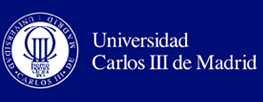
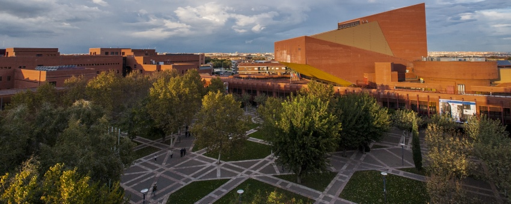

University Carlos III of Madrid (UC3M)
History
Carlos III University of Madrid (UC3M) was established by an Act of the Spanish Parliament on 5 May 1989, within the framework of the University Reform Act of 1983. From the outset it was intended to be a relatively small, innovative, public university, providing teaching of the highest quality and focused primarily on research. Our first Chancellor was Professor Gregorio Peces-Barba.

Mission
The mission of Carlos III University of Madrid is to contribute to the improvement of society through teaching of the highest quality and cutting-edge research in line with stringent international guidelines. The University aspires to excellence in all its activities, with the aim of becoming one of the top universities in Europe.
Values
The university actively encourages the personal development of all those connected to the higher education community. All our activities are guided by the values of merit, ability, efficiency, transparency, fairness, equality and respect for the environment.
